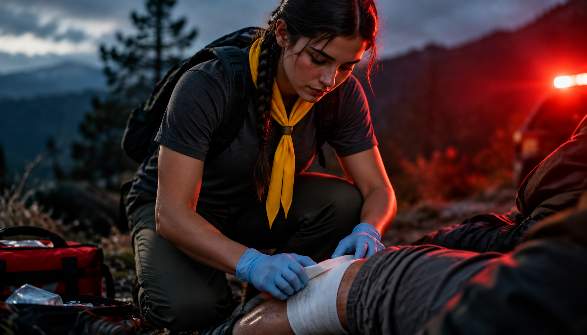
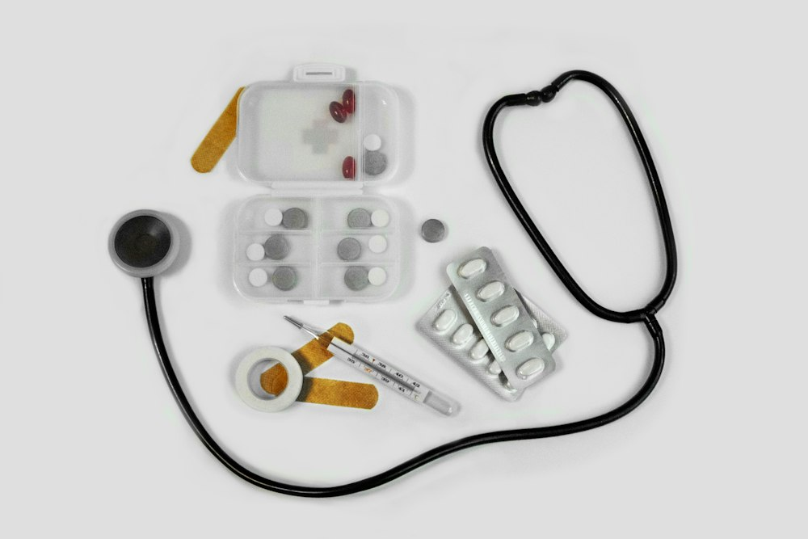
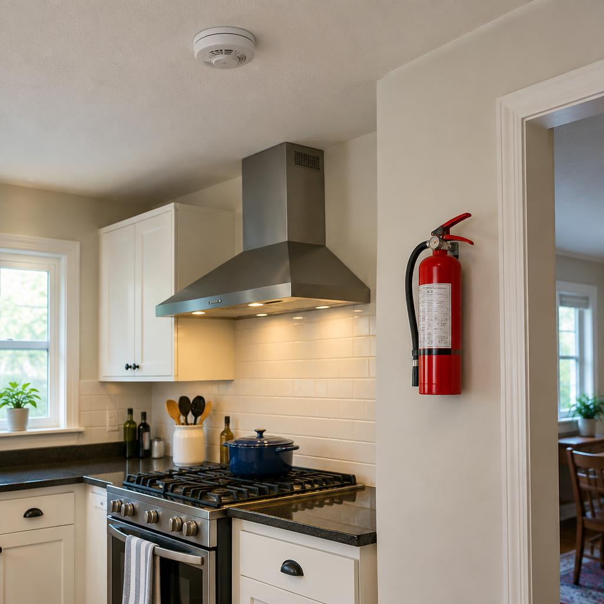
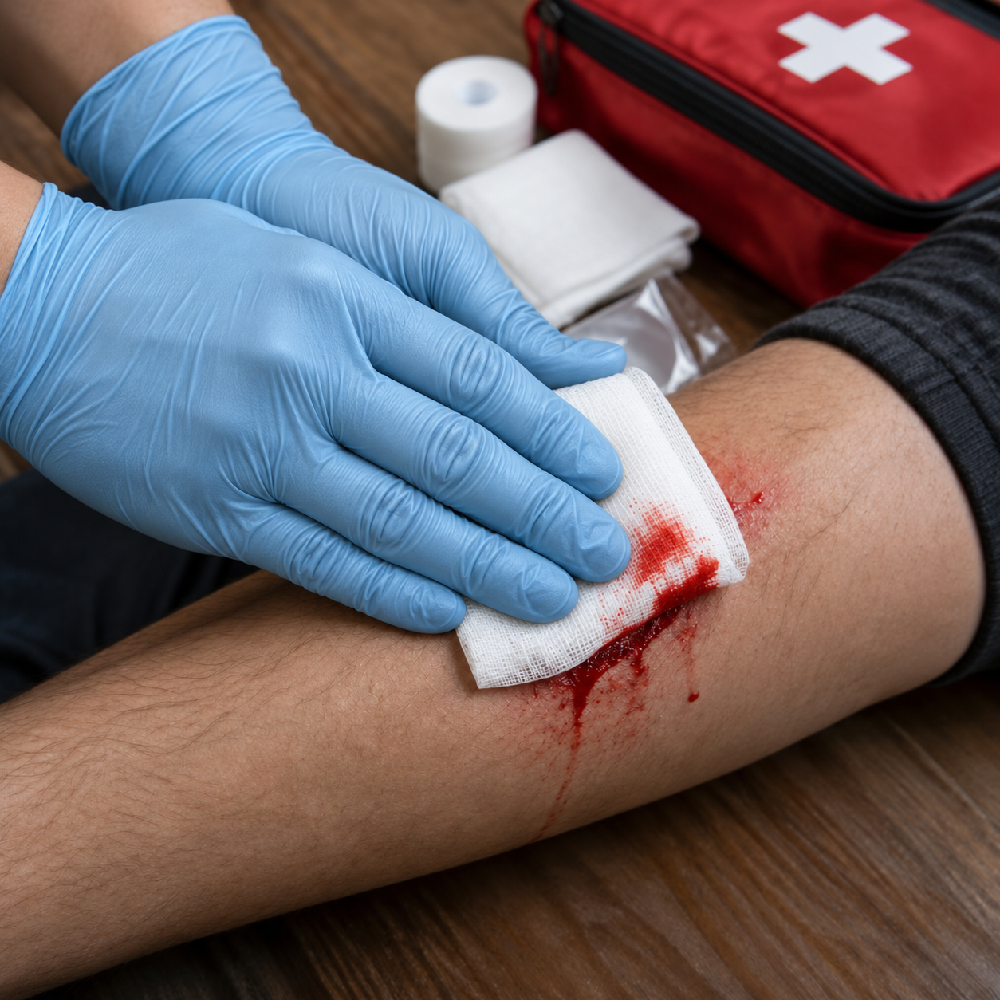
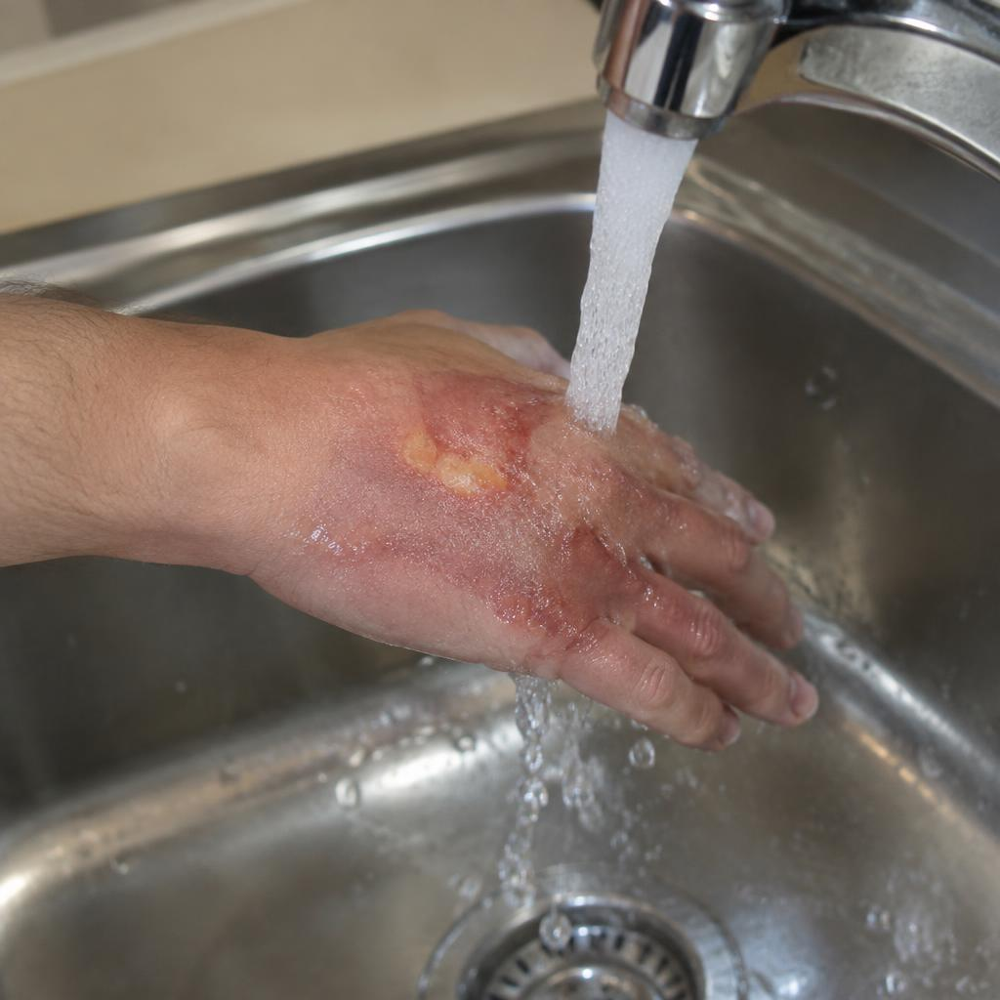
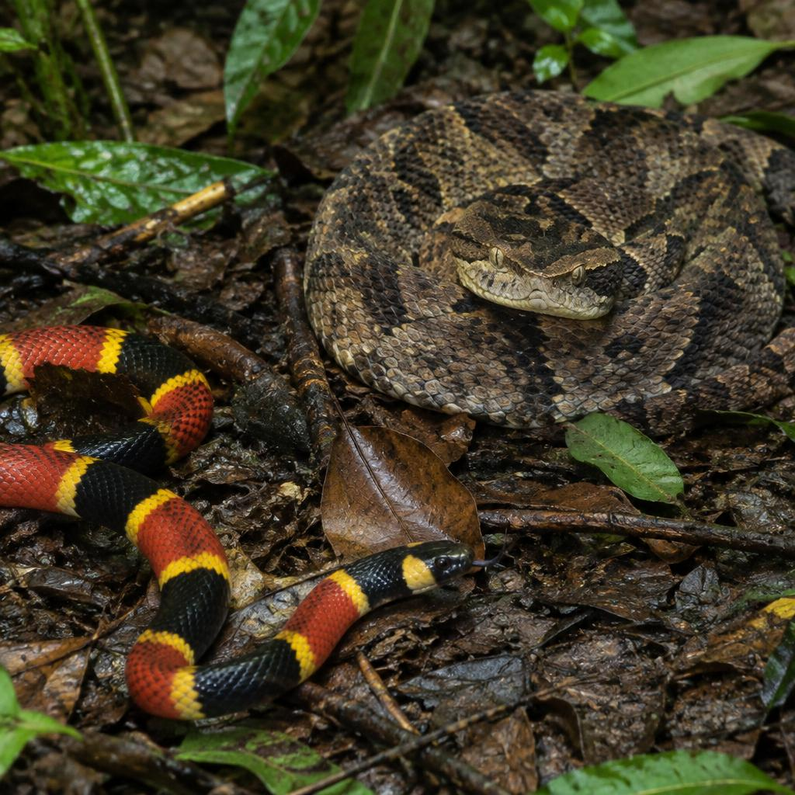
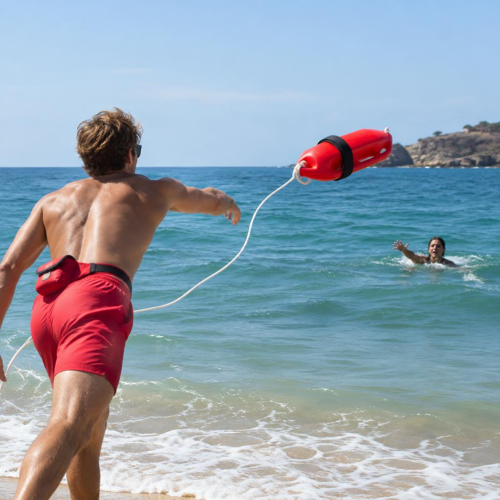

Nível básico. Tudo o que você precisa saber para agir com calma, rapidez e segurança nos primeiros minutos de uma emergência.
São os cuidados imediatos e provisórios prestados a uma pessoa ferida ou que passa mal de repente, no local do acidente, até a chegada de atendimento médico especializado.
Quem presta os primeiros socorros não substitui o médico: ele mantém a vítima viva e evita que a situação piore. Sua finalidade é:
Omitir socorro é crime no Brasil (art. 135 do Código Penal). Se não puder ajudar diretamente sem se arriscar, ligar para o socorro já conta como prestar ajuda.

Antes de tudo: verifique se o local é seguro para você. Socorrista ferido vira mais uma vítima. Depois, ligue — a ligação é gratuita, até de orelhão ou celular sem crédito.
Sinais de obstrução grave: a vítima leva as mãos ao pescoço (sinal universal), não consegue falar, tossir nem respirar, e fica arroxeada. Se ela ainda tosse com força, incentive a tosse e não interfira.
Intoxicação é a entrada no organismo de uma substância tóxica — por ingestão, inalação, contato com a pele ou picada. Medicamentos, produtos de limpeza, agrotóxicos e plantas são os campeões de casos.
Ligue 192 ou para o CIATox (0800 722 6001). Tenha em mãos a embalagem do produto, a quantidade e a hora.
Especialmente com cáusticos (soda, água sanitária) ou derivados de petróleo: eles queimam de novo na volta.
Não dê leite, óleo, sal ou qualquer líquido sem orientação médica.
Remova roupas contaminadas e lave com água corrente em abundância por 15 a 20 minutos.
Leve a vítima para local arejado. Se desacordada e respirando, coloque-a de lado (posição lateral de segurança).
O CO é um gás sem cor, sem cheiro e sem gosto, produzido pela queima incompleta de combustíveis. Ele se liga à hemoglobina do sangue cerca de 200 vezes mais fácil que o oxigênio, “sufocando” o corpo por dentro.
Sintomas: dor de cabeça, tontura, náusea, sonolência, confusão, desmaio. Várias pessoas do mesmo local passando mal ao mesmo tempo é um forte sinal.
Correr é o pior que se pode fazer: o vento alimenta o fogo e as chamas sobem para o rosto.
Depois que o fogo apagar: resfrie as queimaduras com água corrente em temperatura ambiente, retire anéis e relógios, não arranque tecidos grudados na pele, cubra com pano limpo e ligue 193.

É a perda de sangue visível, para fora do corpo. Pode ser arterial (vermelho vivo, em jatos), venosa (vermelho escuro, contínuo) ou capilar (pequenos pontos, “porejando”).
Incline a cabeça para frente (nunca para trás!) e aperte as narinas por 10 minutos.

A regra de ouro para queimaduras térmicas: água corrente fria (não gelada) por 10 a 20 minutos.

Pele vermelha, dor e ardor, sem bolhas. Ex.: queimadura de sol.
Socorro: água corrente, hidratante neutro, beber líquidos.
Bolhas, pele úmida e muita dor.
Socorro: água corrente, cubra com pano limpo e úmido sem apertar, não estoure as bolhas, procure atendimento.
Pele esbranquiçada ou carbonizada, seca, às vezes sem dor (nervos destruídos).
Socorro: ligue 193/192, cubra com pano limpo, previna o choque, não aplique nada.
Usada para calcular a superfície corporal queimada em adultos. Queimaduras de 2º grau acima de 15–20% do corpo são graves. Dica prática: a palma da mão da vítima equivale a cerca de 1%.
Vista frontal · dorso (costas) = 18%
| Parte do corpo | % |
|---|---|
| Cabeça e pescoço | 9% |
| Membros superiores (cada braço 9%) | 18% |
| Membros inferiores (cada perna 18%) | 36% |
| Tórax (frente, parte de cima) | 9% |
| Abdome (frente, parte de baixo) | 9% |
| Dorso (costas inteiras) | 18% |
| Genitais (períneo) | 1% |
| Total | 100% |
Em crianças a cabeça é proporcionalmente maior: num bebê ela representa cerca de 18% do corpo, e cada perna, 14%.
Causada por ácidos, soda cáustica, cal, água sanitária, produtos de piscina e de limpeza.
No Brasil, os gêneros de importância médica são Bothrops (jararaca, ~90% dos casos), Crotalus (cascavel), Lachesis (surucucu) e Micrurus (coral verdadeira). O único tratamento eficaz é o soro antiofídico, aplicado no hospital.

É uma doença viral (vírus do gênero Lyssavirus) que ataca o sistema nervoso central, causando encefalite. Transmite-se pela saliva de animais infectados — mordida, arranhão ou lambedura em feridas. Depois que os sintomas aparecem, é quase 100% fatal, mas pode ser evitada com a vacina.
Quem transmite: somente mamíferos — cães, gatos, morcegos (hoje os principais no Brasil), macacos, raposas, saguis, bovinos, equinos e suínos.
Aves, répteis e peixes não transmitem raiva — apenas mamíferos têm o vírus. Louis Pasteur criou a primeira vacina antirrábica em 1885.
Retire o ferrão raspando com a unha ou um cartão (não use pinça: espreme o veneno). Lave e aplique compressa fria.
Armadeira, marrom e viúva-negra são as perigosas. Lave, aplique compressa morna (armadeira) para a dor e procure atendimento; leve o animal se possível.
Muito comum nas cidades. Lave, compressa morna e vá ao hospital — crianças e idosos são os mais sensíveis.
Lave com água fria e procure ajuda. A Lonomia pode causar hemorragias graves.
Acontecem após quedas, pancadas fortes, atropelamentos e acidentes de carro. O sangue se perde dentro do corpo, e a vítima pode parecer bem no início.
Sinais: pele pálida, fria e úmida; pulso rápido e fraco; sede; tontura; abdome endurecido e dolorido; hematomas; vômito ou tosse com sangue; agitação ou sonolência — sinais de estado de choque.
O afogamento é uma das principais causas de morte de crianças e jovens no Brasil. A maioria poderia ser evitada.
Nade perto de um posto de guarda-vidas e respeite as bandeiras (vermelha = perigo). Fuja das correntes de retorno — faixas de água escura e calma entre as ondas. Se for puxado, nade paralelo à praia.
Não mergulhe de cabeça em águas desconhecidas ou rasas (risco de lesão na coluna). Cuidado com correntezas, pedras, galhos e mudanças bruscas de profundidade.
Cerca com portão e trava, crianças sempre sob a vista de um adulto, nada de correr na borda e cuidado com o ralo de sucção.
Nunca nade sozinho, após comer muito ou beber álcool. Use colete em barcos. Conheça seus limites e aprenda a nadar.

Pessoas em pânico se agarram a quem chega e podem afogar o socorrista. Por isso, a regra é: entre na água só como último recurso.
Estenda um galho, vara, remo, cabo de vassoura ou toalha — deitado no chão para não ser puxado.
Jogue algo que flutue: boia, garrafa PET vazia, isopor, prancha ou corda.
Use um barco, caiaque ou prancha para chegar perto, oferecendo o remo.
Grite por ajuda, avise guarda-vidas e ligue 193.
Fora da água: se a vítima não respira, faça 5 ventilações iniciais e inicie a RCP. Se respira, coloque-a de lado e aquecida.